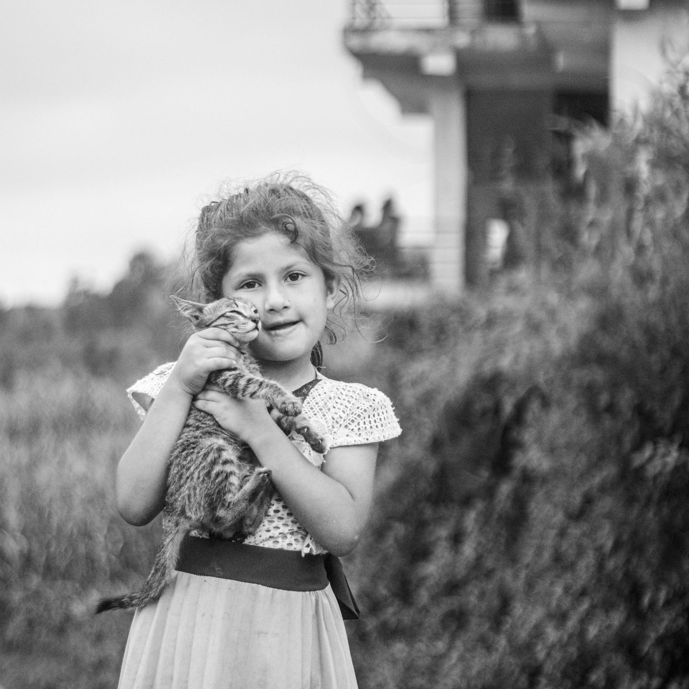
Shelters & rescues
Intake, health checks, vaccinations and adoption readiness for every animal in your care.
OKAPI follows an animal’s life in your care, from the day it arrives to the day it leaves, and runs the organisation around it: facilities, people, finances and outreach. For shelters, vets, animal hospitals, farms and livestock units, zoos, volunteer groups and wildlife organisations.
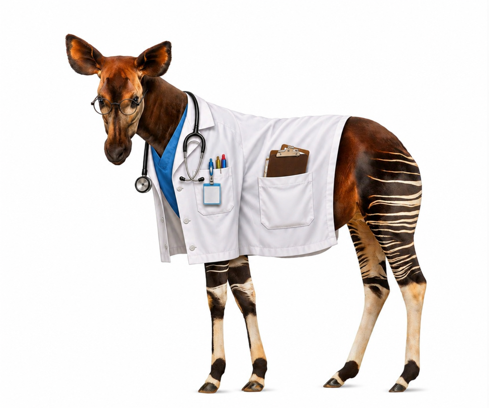


Animals change hands, volunteers rotate, notes get lost. When the history of an animal lives in one reliable place, the next person to care for it starts informed instead of starting over.
We are building OKAPI around two simple goals: a better quality of life for the animals, and less administrative friction for the people who look after them.
One platform, shaped around how different organisations actually work.

Intake, health checks, vaccinations and adoption readiness for every animal in your care.
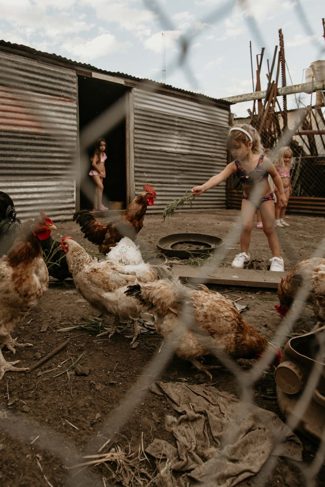
Follow each animal from birth to sale or retirement, with health, feed and production costs in one place.
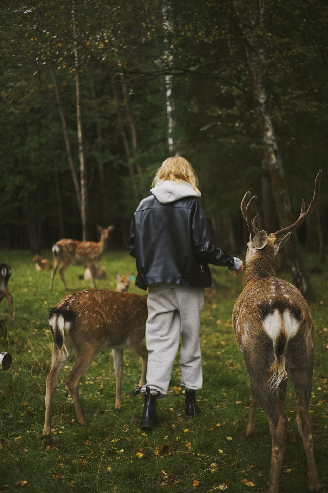
Keep welfare observations and treatments consistent across keepers, vets and shifts.
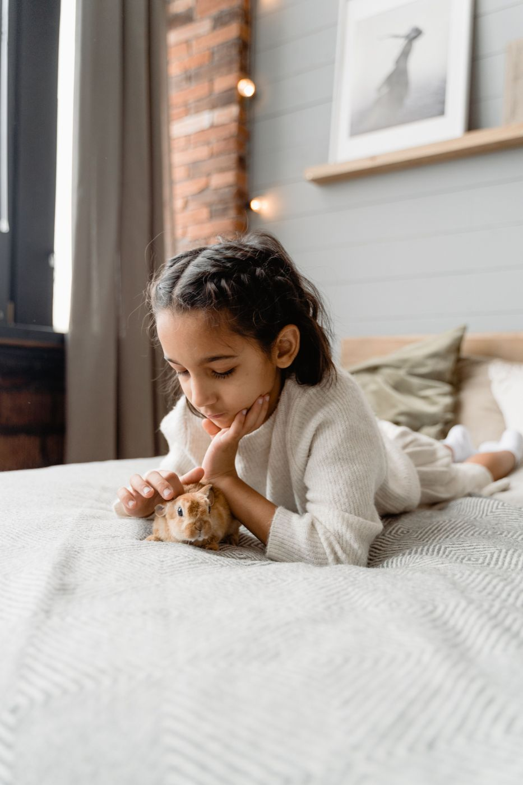
Medical history, follow-ups and appointments connected, so nothing slips between visits.

Long-term care plans, feeding notes and routine treatments that every carer can see.
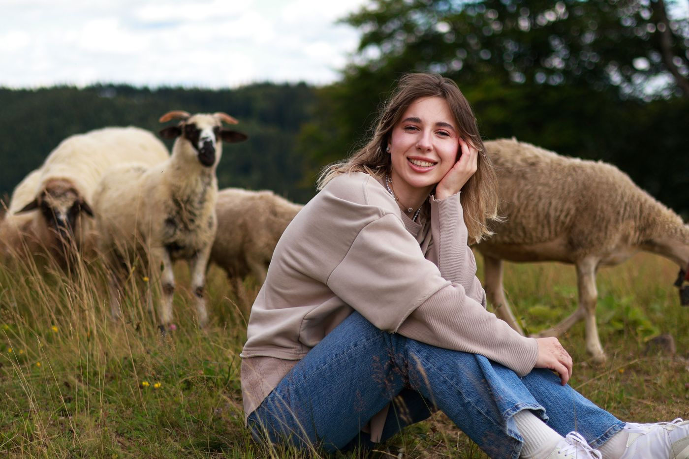
Share the essentials with the people helping on the ground, without sharing everything.
Every animal has a timeline, from arrival to departure. OKAPI keeps it in one place, whoever is on shift. Choose your type of organisation to see what that looks like for you.
Intake from finders, owners or authorities. Identification, microchip scan, photos and quarantine.
Vaccination, sterilisation, treatments, behaviour notes and follow-up checks.
Kennel or foster placement, feeding, walks, enrichment and routine care.
Adoption days, applications, home checks, volunteers and sponsors.
Adoption contract, return to owner or transfer, with post-adoption follow-up.
Owner and patient registration, referrals and triage on arrival.
Exam notes, tests, procedures, prescriptions and vaccinations.
Wards, monitoring, medication and feeding rounds, discharge preparation.
Appointments, reminders, estimates, invoices and communication with owners.
Recovery checks, repeat treatments and referrals, with the full history for the next visit.
Births, purchases, tagging, herd or flock registers and origin.
Vaccinations, treatments, vet visits, withdrawal periods and disease alerts.
Feed and water, housing conditions, grazing, welfare checks and production notes.
Costs per animal or group, supplies, labour, customers and orders.
Sale, transfer or retirement, with the records needed for traceability and reporting.
Arrivals, transfers between institutions, breeding records and identification.
Preventive care, treatments, quarantine, vet rounds and specimen history.
Diets, enrichment, enclosures, keeper notes and behaviour observations.
Events, talks, sponsorship, adopt-an-animal programmes and shop.
Transfers, breeding loans, releases and end-of-life records.
Report, location, capture and condition on arrival.
Treatment, medication, feeding plans and progress checks.
Fitness, behaviour, release criteria and volunteer care shifts.
Volunteers, donors, campaigns and partner clinics.
Release site and date, monitoring, or transfer to a sanctuary.
Around every animal, the organisation keeps running. The same workspace holds the rest of the work:
Not on the list? Sanctuaries, stables, breeders, sporting and working animals have similar needs. Tell us about yours.
Honest status: today OKAPI is a prototype covering animal profiles, medical records and appointments, with sample data stored in your browser. The modules below are the product we are building towards, and each one is marked with its current status. Please do not use the prototype for real medical records.
Take what you need and add more as you grow. Pricing will be announced with the first release.
The AI assistant is a long-term goal. It will only be as good as the data your organisation records, and its suggestions will always be for people to review, never automatic decisions.

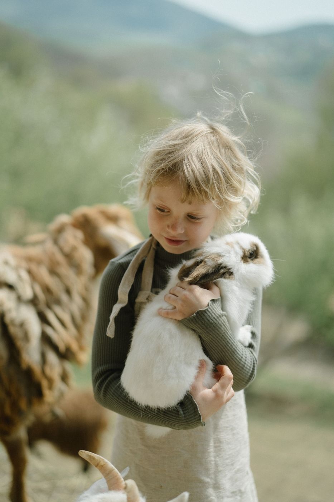
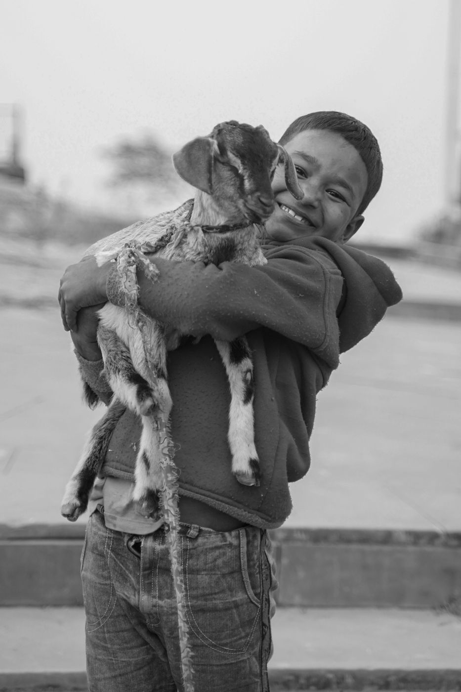
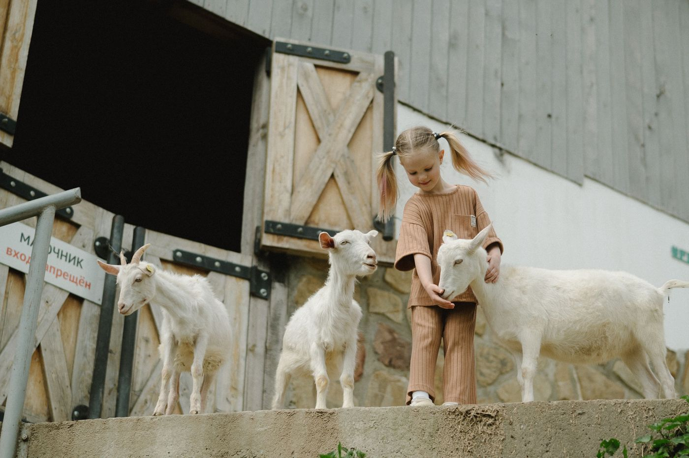
Pets, farm animals, birds and wildlife: wherever they live, their care deserves a clear record.
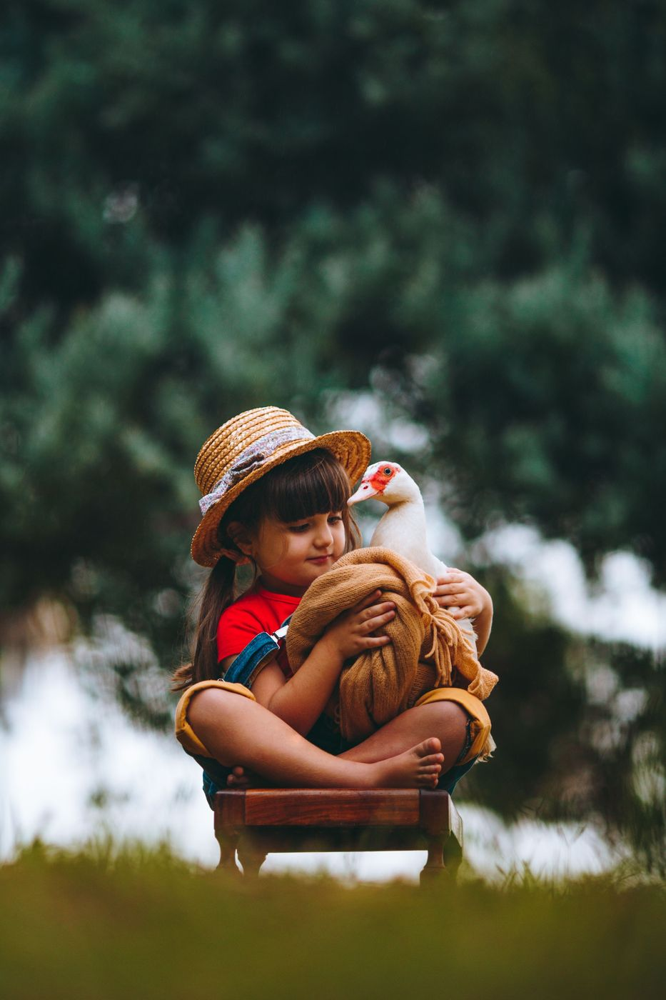

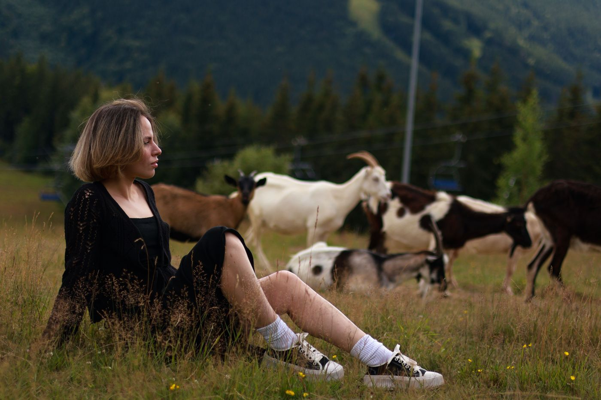
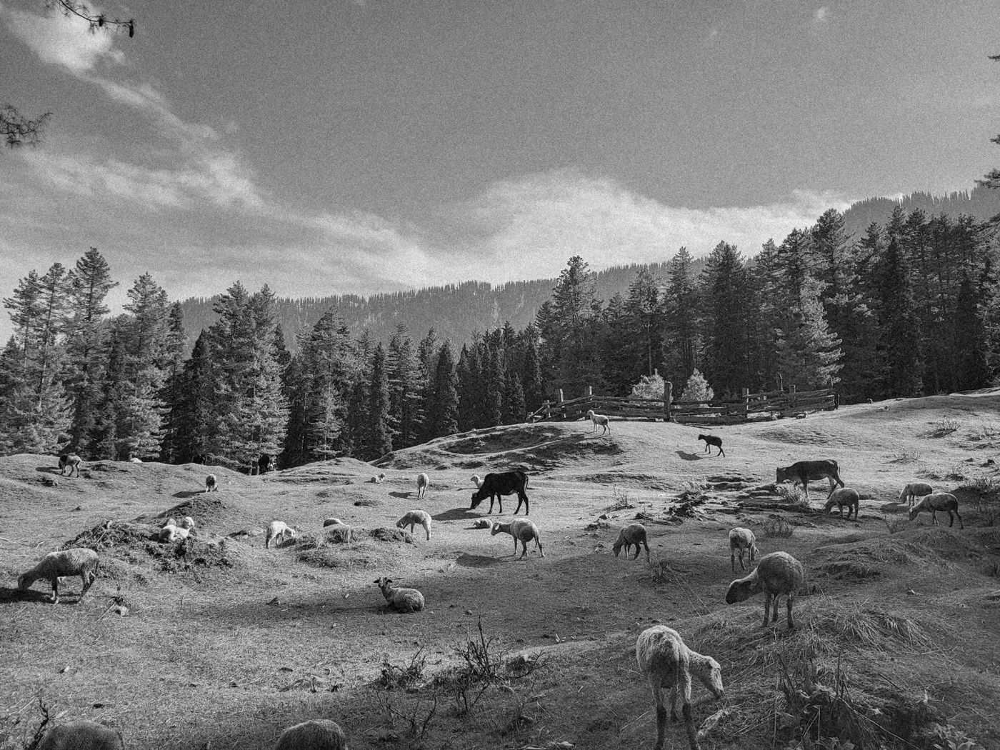
We are working with a small number of shelters and clinics to shape the first release. Tell us how you work today and what would help most.
Curious about a demo, interested in a pilot, or already testing and need a hand? Write to us.